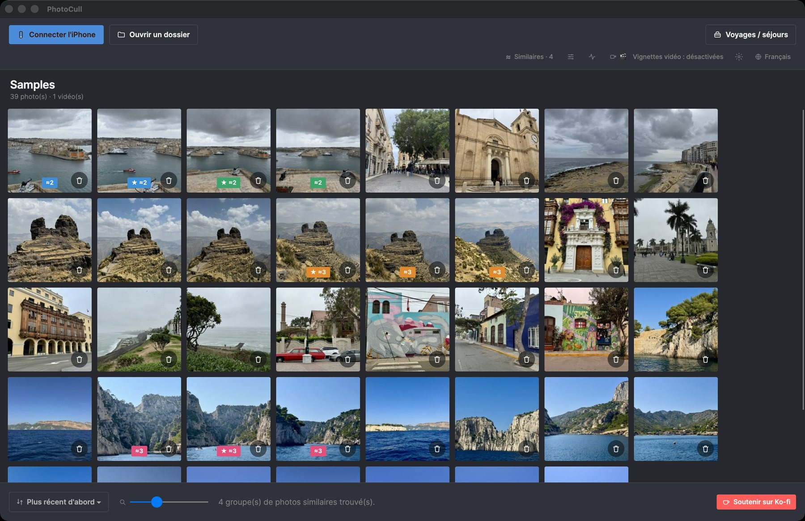
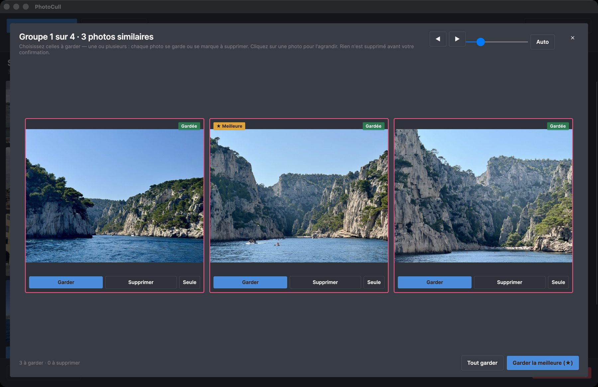
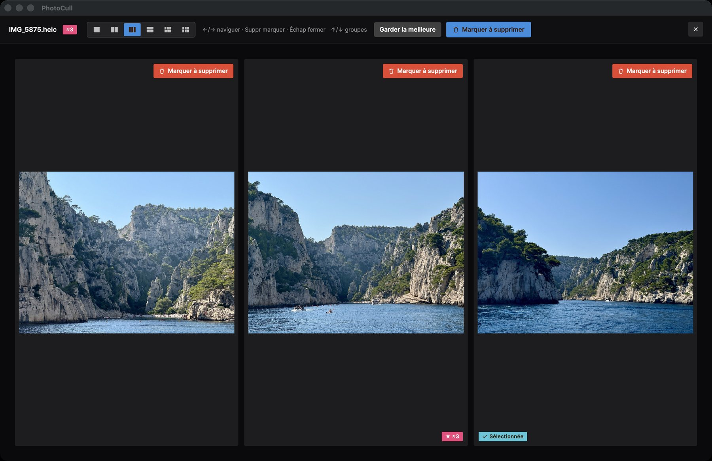

Le vrai outil pour trier des milliers de photos
PhotoCull est une application de bureau à part entière : elle affiche tout le rouleau de votre iPhone regroupé par séjour, compare vos photos côte à côte, et supprime en masse ce qui ne vaut plus la peine d'être gardé — directement depuis votre Mac ou votre PC.
Mac : gratuit · macOS 11+ sur puce Apple · signé et notarisé par Apple
Windows : gratuit · Windows 10/11 (64 bits) · lire un iPhone demande l'app gratuite Apple Devices du Microsoft Store · Windows peut afficher un avertissement SmartScreen (l'app n'est pas encore signée) : Informations complémentaires → Exécuter quand même

Un aperçu de l'app


Ce que fait l'app
Vue "Voyages / séjours"
Toute votre photothèque regroupée automatiquement par séjour (temps ET lieu, comme l'app iOS) — pour repérer d'un coup d'œil les voyages qui prennent le plus de place.
Comparaison côte à côte
Affichez jusqu'à 6 photos similaires en même temps pour choisir la meilleure — idéal pour trier les rafales et les quasi-doublons.
Suppression en masse, en toute sécurité
Marquez des centaines de photos en quelques clics. La suppression réelle passe par l'app compagnon sur votre iPhone et « Récemment supprimés » (30 jours) — jamais de suppression définitive immédiate.
Le poids qui compte
Triez et filtrez par séjour d'1 jour, par lieu exclu (domicile, travail...), par poids — les mêmes filtres que sur l'app iOS, pensés pour aller vite.
Connexion directe à l'iPhone
Branchez votre iPhone en USB (ou utilisez le mode simulation pour tester) : PhotoCull lit votre rouleau directement, sans passer par iCloud ni aucun serveur.
100% hors ligne
Aucune photo, aucune position GPS n'est jamais envoyée où que ce soit. La reconnaissance des lieux fonctionne entièrement en local, sans compte ni abonnement.
Gratuit, avec deux options en achat unique
Jamais d'abonnement. Parcourir, comparer et trier est toujours gratuit. Les formules ne fixent que le nombre de photos supprimables par jour.
Gratuit
0 $
Parcourez, comparez et triez tout. 3 suppressions par jour sur l'iPhone, et jusqu'à 6 photos par jour depuis le Mac.
Pro
4,99 $ · achat unique
Suppression illimitée sur l'iPhone, lieux personnalisés illimités et actions groupées sur plusieurs séjours. Jusqu'à 15 photos par jour depuis le Mac.
Pro + Desktop
24,99 $ · achat unique
Tout Pro, plus la suppression illimitée depuis PhotoCull sur votre Mac.
Prix en dollars US ; l'App Store les affiche dans votre devise. L'achat se fait dans l'app iOS TripSweep et PhotoCull suit via votre iPhone. Trier un dossier du Mac n'est jamais limité.
Fonctionne avec l'app iOS TripSweep
Parcourir, comparer et trier les photos de votre iPhone fonctionne seul : branchez-le en USB. Pour supprimer réellement des photos de l'iPhone, il faut aussi l'app iOS TripSweep (gratuite), qui applique la suppression sur le téléphone via « Récemment supprimés » et rend l'analyse des séjours quasi instantanée. Les dossiers du Mac ou du PC se trient sans elle.